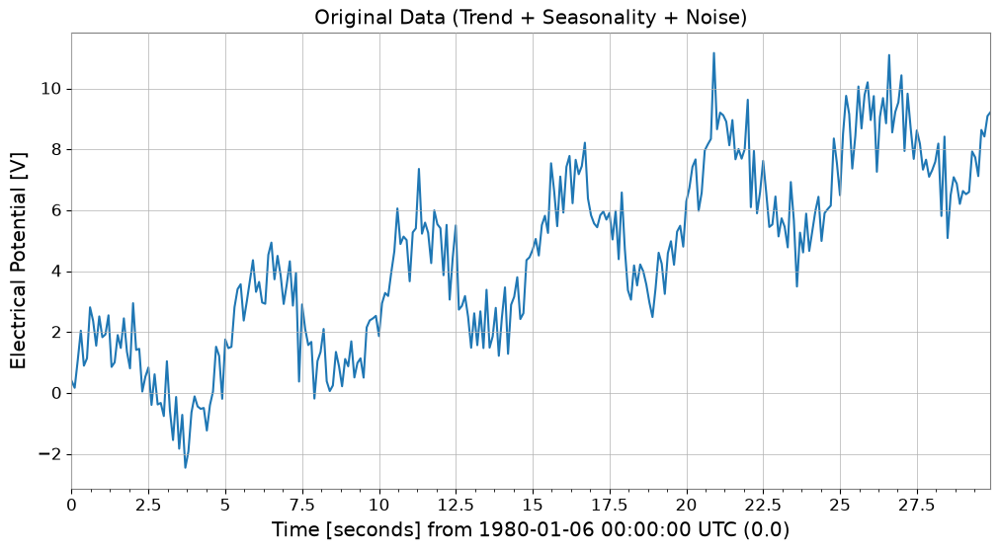
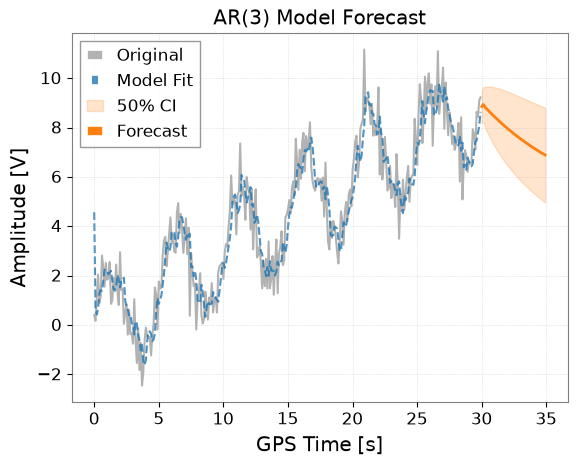
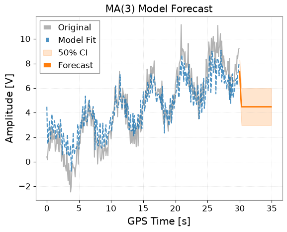
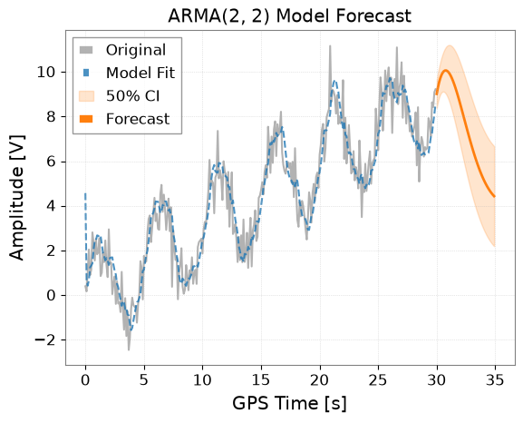
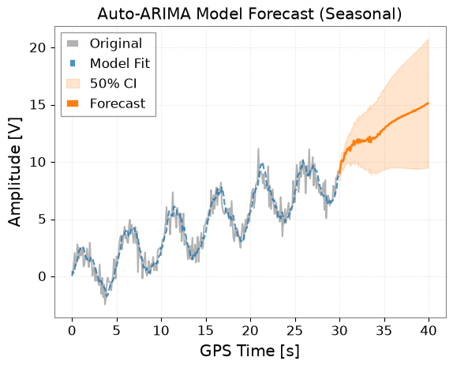
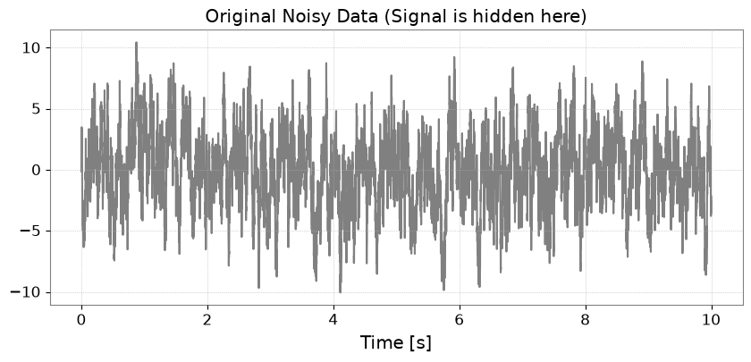
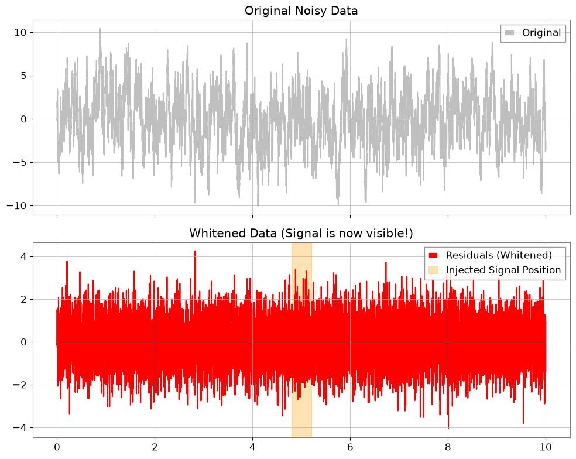
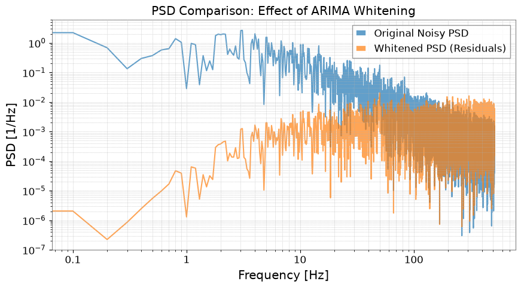

ARIMA: Time Series Forecasting#
This notebook demonstrates how to model and forecast time series data using ARIMA-related functions (AR, MA, ARMA, ARIMA/SARIMAX) that have been added to the gwexpy TimeSeries class.
Related API: Time Series API
Related theory: Validated Algorithms, Numerical Stability
Setup#
Import the necessary libraries.
import warnings
import matplotlib.pyplot as plt
import numpy as np
import sklearn.utils.validation
# Monkeypatch for pmdarima compatibility with scikit-learn >= 1.6
_orig_check_array = sklearn.utils.validation.check_array
def _patched_check_array(*args, **kwargs):
kwargs.pop("force_all_finite", None)
return _orig_check_array(*args, **kwargs)
sklearn.utils.validation.check_array = _patched_check_array
warnings.filterwarnings(
"ignore", message=r".*force_all_finite.*", category=FutureWarning
)
warnings.filterwarnings("ignore", category=FutureWarning, module=r"sklearn\..*")
warnings.filterwarnings("ignore", category=FutureWarning, module=r"pmdarima\..*")
from gwexpy.timeseries import TimeSeries
Creating Sample Data#
To verify the effectiveness of ARIMA models, we create synthetic data that includes a trend, seasonality (periodicity), and noise.
# Trend + Seasonality + Noise
t0 = 0
dt = 0.1
duration = 30
t = np.arange(0, duration, dt)
n_samples = len(t)
# 1. Linear Trend
trend = 0.3 * t
# 2. Periodic component (Sine)
seasonality = 2.0 * np.sin(2 * np.pi * 0.2 * t)
# 3. Noise
np.random.seed(42)
noise = np.random.normal(0, 0.8, n_samples)
data = trend + seasonality + noise
# Create TimeSeries object
ts = TimeSeries(data, t0=t0, dt=dt, unit="V", name="Sample Data")
ts.plot()
plt.title("Original Data (Trend + Seasonality + Noise)")
plt.show()

1. AR (AutoRegressive) Model#
The AR model assumes that the current value depends on past values.
Use the ts.ar(p) method, where p is the order.
# Fit with order p=3
model_ar = ts.ar(p=3)
# Display model summary
# print(model_ar.summary())
# Plot results
# forecast_steps specifies how many steps to forecast into the future
model_ar.plot(forecast_steps=50, alpha=0.5)
plt.title("AR(3) Model Forecast")
plt.show()

2. MA (Moving Average) Model#
The MA model assumes that the current value depends on past prediction errors (white noise).
Use the ts.ma(q) method.
# Fit with order q=3
model_ma = ts.ma(q=3)
# Plot results
model_ma.plot(forecast_steps=50, alpha=0.5)
plt.title("MA(3) Model Forecast")
plt.show()

3. ARMA (AutoRegressive Moving Average) Model#
The ARMA model combines AR and MA.
Use the ts.arma(p, q) method.
# Fit with p=2, q=2
model_arma = ts.arma(p=2, q=2)
model_arma.plot(forecast_steps=50, alpha=0.5)
plt.title("ARMA(2, 2) Model Forecast")
plt.show()

4. ARIMA / Auto-ARIMA#
The ARIMA model removes non-stationarity (such as trends) by differencing, then applies the ARMA model.
Use the ts.arima() method.
With the auto=True option, the pmdarima library is used to automatically search for optimal parameters (p, d, q). This is the most recommended approach.
try:
print("Searching for optimal ARIMA parameters... (this may take a few seconds)")
# Seasonality can also be considered
# m is the number of steps in a seasonal period
model_auto = ts.arima(auto=True, auto_kwargs={"seasonal": True, "m": 50})
# Show info of the optimal model found
print(model_auto.summary())
# Plot results (Forecasting for a longer period)
ax = model_auto.plot(forecast_steps=100, alpha=0.5)
plt.title("Auto-ARIMA Model Forecast (Seasonal)")
plt.show()
except ImportError as e:
print(f"Auto-ARIMA skipping: {e}")
Searching for optimal ARIMA parameters... (this may take a few seconds)
SARIMAX Results
===========================================================================================
Dep. Variable: y No. Observations: 300
Model: SARIMAX(1, 1, 2)x(1, 0, [], 50) Log Likelihood -404.141
Date: Mon, 10 Aug 2026 AIC 820.282
Time: 23:03:18 BIC 842.485
Sample: 0 HQIC 829.169
- 300
Covariance Type: opg
==============================================================================
coef std err z P>|z| [0.025 0.975]
------------------------------------------------------------------------------
intercept 0.0044 0.006 0.695 0.487 -0.008 0.017
ar.L1 0.8693 0.053 16.310 0.000 0.765 0.974
ma.L1 -1.6277 0.052 -31.464 0.000 -1.729 -1.526
ma.L2 0.7409 0.043 17.235 0.000 0.657 0.825
ar.S.L50 0.1604 0.071 2.263 0.024 0.021 0.299
sigma2 0.8667 0.070 12.431 0.000 0.730 1.003
===================================================================================
Ljung-Box (L1) (Q): 0.13 Jarque-Bera (JB): 0.69
Prob(Q): 0.71 Prob(JB): 0.71
Heteroskedasticity (H): 1.37 Skew: -0.10
Prob(H) (two-sided): 0.12 Kurtosis: 3.14
===================================================================================
Warnings:
[1] Covariance matrix calculated using the outer product of gradients (complex-step).

5. Obtaining Forecast Data#
Beyond plotting, you can directly obtain forecast values as a TimeSeries object using the .forecast() method.
This also includes confidence intervals.
if "model_auto" not in dir():
print("Auto-ARIMA model not available (pmdarima may be missing); skipping forecast.")
else:
steps = 50
# Get forecast values and confidence intervals
forecast_ts, intervals = model_auto.forecast(
steps=steps, alpha=0.5
) # 50% confidence interval
print("Forecast Data:")
print(forecast_ts)
print("\nConfidence Interval (Upper):")
print(intervals["upper"])
# Forecasting data can be saved or used for other analysis
# forecast_ts.write("forecast.h5")
Forecast Data:
TimeSeries([ 9.02062915, 9.60946405, 10.04247456, 10.15366445,
10.052592 , 10.38952912, 10.79814617, 10.71027098,
11.00660121, 11.18204481, 11.08229647, 11.29882151,
10.98338727, 11.34915911, 11.51884639, 11.45194911,
11.87326351, 11.52377866, 11.68682442, 11.7893815 ,
11.9809718 , 11.6301489 , 11.97772171, 11.84041478,
11.72114873, 11.91253389, 11.8838869 , 11.78615925,
11.8774296 , 11.82550574, 11.89782592, 11.97898836,
12.11131514, 11.7662658 , 12.22000645, 11.72132856,
11.98238211, 12.11214327, 12.11235985, 12.04093447,
12.14348261, 12.16096473, 12.20710207, 12.45441741,
12.45770285, 12.39286443, 12.6699954 , 12.66916833,
12.81102595, 12.86571835],
unit: V,
t0: 30.0 s,
dt: 0.1 s,
name: Sample Data_auto_forecast,
channel: None)
Confidence Interval (Upper):
TimeSeries([ 9.64857072, 10.2554647 , 10.71958565, 10.87455716,
10.82818047, 11.22843787, 11.70674543, 11.69298419,
12.06628628, 12.32035105, 12.29996294, 12.59591292,
12.35947544, 12.80346063, 13.05032641, 13.05939929,
13.55536057, 13.27912824, 13.51399385, 13.68692426,
13.94744559, 13.66412891, 14.07781018, 14.00524778,
13.94940078, 14.20292097, 14.23516817, 14.19713784,
14.34695277, 14.35246436, 14.4811537 , 14.61766074,
14.80434796, 14.51271392, 15.01896222, 14.57192023,
14.88377233, 15.06352749, 15.11296484, 15.0900168 ,
15.2403272 , 15.3048835 , 15.39743258, 15.69052159,
15.7389658 , 15.71869326, 16.03981815, 16.0824329 ,
16.26719914, 16.36428493],
unit: V,
t0: 30.0 s,
dt: 0.1 s,
name: upper_ci,
channel: None)
6. Application in Gravitational Wave Data Analysis: Noise Removal (Whitening) with ARIMA#
In gravitational wave data analysis, a process called whitening is performed to extract burst signals or ringdown waveforms from stationary “colored noise”. By training an ARIMA model as a predictive model for background noise and subtracting the predicted values from the measured values (taking residuals), it is possible to remove noise and enhance the signal.
Step 1: Generating Colored Noise and Injecting a Signal#
First, we create colored noise with strong low-frequency components (AR(1) process), and embed a weak signal (sine-Gaussian) that is difficult to distinguish otherwise. Note: We use “strain” as the unit, which is recognizable by Astropy.
import matplotlib.pyplot as plt
import numpy as np
from gwexpy.timeseries import TimeSeries
def generate_mock_data(duration=10, fs=1024):
t = np.linspace(0, duration, int(duration * fs))
# 1. Background Noise (AR(1) process with strong autocorrelation)
np.random.seed(42)
white_noise = np.random.normal(0, 1, len(t))
colored_noise = np.zeros_like(white_noise)
for i in range(1, len(t)):
colored_noise[i] = 0.95 * colored_noise[i - 1] + white_noise[i]
# 2. Injected Signal (Sine-Gaussian)
center_time = 5.0
sig_freq = 50.0
width = 0.1
signal = (
2.0
* np.exp(-((t - center_time) ** 2) / (2 * width**2))
* np.sin(2 * np.pi * sig_freq * t)
)
data = colored_noise + signal
# Use a standard unit string that astropy/gwpy can recognize
return TimeSeries(data, t0=0, dt=1 / fs, unit="strain", name="MockData")
ts = generate_mock_data()
plt.figure(figsize=(10, 4))
plt.plot(ts, color="gray")
plt.title("Original Noisy Data (Signal is hidden here)")
plt.xlabel("Time [s]")
plt.grid(True, linestyle=":")
plt.show()

Step 2: Noise Modeling with ARIMA#
Using auto=True, we search for the optimal model that expresses the autocorrelation structure of the background noise.
print("Searching for optimal noise model parameters...")
# We prioritize AR model for whitening, so we set max_p=5 and max_q=0.
model = ts.arima(auto=True, max_p=5, max_q=0)
print(f"Best model order: {model.res.model.order}")
print(model.summary())
Searching for optimal noise model parameters...
Best model order: (5, 1, 0)
SARIMAX Results
==============================================================================
Dep. Variable: y No. Observations: 10240
Model: SARIMAX(5, 1, 0) Log Likelihood -14694.968
Date: Mon, 10 Aug 2026 AIC 29403.936
Time: 23:03:30 BIC 29454.574
Sample: 0 HQIC 29421.057
- 10240
Covariance Type: opg
==============================================================================
coef std err z P>|z| [0.025 0.975]
------------------------------------------------------------------------------
intercept -0.0003 0.010 -0.033 0.973 -0.020 0.019
ar.L1 -0.0379 0.010 -3.794 0.000 -0.057 -0.018
ar.L2 -0.0413 0.010 -4.150 0.000 -0.061 -0.022
ar.L3 -0.0271 0.010 -2.692 0.007 -0.047 -0.007
ar.L4 -0.0303 0.010 -3.078 0.002 -0.050 -0.011
ar.L5 -0.0216 0.010 -2.195 0.028 -0.041 -0.002
sigma2 1.0330 0.014 72.089 0.000 1.005 1.061
===================================================================================
Ljung-Box (L1) (Q): 0.01 Jarque-Bera (JB): 0.54
Prob(Q): 0.94 Prob(JB): 0.76
Heteroskedasticity (H): 1.03 Skew: 0.01
Prob(H) (two-sided): 0.35 Kurtosis: 3.03
===================================================================================
Warnings:
[1] Covariance matrix calculated using the outer product of gradients (complex-step).
Step 3: Extracting and Visualizing Residuals#
By subtracting the “stationary noise” predicted by the model, we obtain the residuals \(x_r = x - \hat{x}\). This is the whitened data.
ts_whitened = model.residuals()
ts_whitened.name = "Whitened Data"
fig, ax = plt.subplots(2, 1, figsize=(10, 8), sharex=True)
ax[0].plot(ts, color="gray", alpha=0.5, label="Original")
ax[0].set_title("Original Noisy Data")
ax[0].legend(loc="upper right")
ax[1].plot(ts_whitened, color="red", label="Residuals (Whitened)")
ax[1].set_title("Whitened Data (Signal is now visible!)")
ax[1].axvspan(4.8, 5.2, color="orange", alpha=0.3, label="Injected Signal Position")
ax[1].legend(loc="upper right")
plt.tight_layout()
plt.show()

Step 4: Evaluation in the Frequency Domain#
We calculate and compare the Power Spectral Density (PSD).
fft_original = ts.psd()
fft_whitened = ts_whitened.psd()
plt.figure(figsize=(10, 5))
plt.loglog(
fft_original.frequencies.value,
fft_original.value,
label="Original Noisy PSD",
alpha=0.7,
)
plt.loglog(
fft_whitened.frequencies.value,
fft_whitened.value,
label="Whitened PSD (Residuals)",
alpha=0.7,
)
plt.title("PSD Comparison: Effect of ARIMA Whitening")
plt.xlabel("Frequency [Hz]")
plt.ylabel("PSD [1/Hz]")
plt.legend()
plt.grid(True, which="both", linestyle=":")
plt.show()

Summary#
Using
model.residuals(), whitening can be easily performed without writing complex mathematical formulas.This technique is very powerful for searching for burst signals in gravitational wave analysis and for extracting ringdown waveforms (exponentially decaying sinusoids) immediately after events.
Related API: Time Series API
Related theory: Validated Algorithms, Numerical Stability